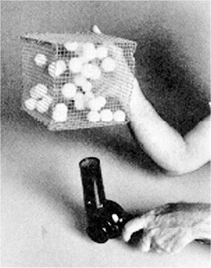
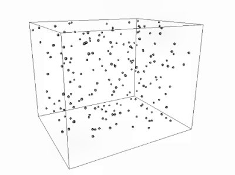
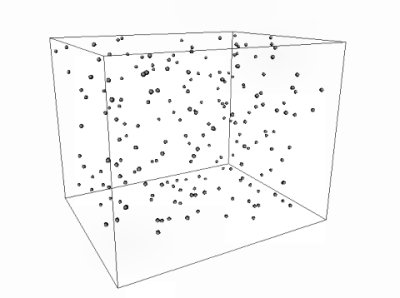

Fiecare moleculă de apă este alcătuită din doi atomi de hidrogen şi unul de oxigen.
a. Cât este masa molară a apei?
b. Densitatea apei lichide este 1000 kg/m3. Cât este distanţa medie dintre moleculele vecine ale apei lichide?
c. Apa lichidă este foarte puţin compresibilă. Poţi verifica aceasta încercând să comprimi apa într-o seringă. Estimează dimensiunile unei molecule de apă.
Răspuns parţial: b. 0,31 nm.
Aerul atmosferic este un amestec alcătuit aproape în totalitate din molecule diatomice de oxigen şi azot.
a. Cât este fracţia molară a oxigenului în aerul atmosferic?
b. Densitatea aerului, în condiţii normale de temperatură şi presiune, este 1,29 kg/m3. Cât este distanţa medie dintre moleculele vecine ale aerului?
c. Aerul este foarte compresibil. Poţi verifica aceasta încercând să comprimi aerul într-o seringă. Este în acord acest fapt cu rezultatul pe care l-ai obţinut la întrebarea b ?
Răspuns parţial: a. 22%
În bucătărie este de mare ajutor folia de aluminiu.
a. Estimează grosimea foliei de aluminiu folosită în bucătărie.
b. Densitatea aluminiului este 2700 kg/m3, iar masa sa atomică relativă este 27. Estimează câte straturi de atomi de aluminiu sunt pe grosimea foliei.
Priveşte atent în jurul tău şi identifică sistemele termodinamice cu care interacţionezi termic. De ce oare nu ajungi în echilibru termic cu acestea?
În rândurile tabelului de mai jos au fost alăturate noţiuni cu înţelesuri diferite:
constanta lui Avogadro |
grupare de 6,022·1023 particule |
unitatea atomică de masă |
cantitatea 6,022·1023 mol-1 |
masă moleculară relativă |
masa unui mol |
masă molară |
1/12 din masa unui atom de 12C |
masă moleculară |
masa unei molecule |
masă atomică relativă |
masa unui atom |
mol |
raportul dintre masa moleculară şi unitatea atomică de masă |
masă atomică |
raportul dintre masa atomică şi unitatea atomică de masă |
Aranjează tabelul astfel încât în fiecare rând al acestuia să fie alături noţiuni cu acelaşi înţeles!
Când ai o zi liberă, foloseşte un termometru medical şi măsoară pe parcursul zilei, din oră în oră, temperatura corpului tău la nivelul pielii de sub braţ. Notează şi temperatura din acel moment al aerului din cameră, indicată de un termometru de cameră.
Reprezintă, pe acelaşi grafic, valorile măsurate.
În care perioadă a zilei temperatura ta este maximă? În care este minimă?
De ce oare temperatura ta se menţine mereu mai mare decât cea a aerului din cameră?
Temperatura corporală normală, măsurată la nivelul pielii de sub braţ, este 36,5°C, cu variaţii admisibile în plus sau în minus de 0,5°C. Depăşirea acestor limite semnalează o stare anormală a organismului.
Interesează−te în legătură cu consecinţele negative pe care le poate avea o temperatură corporală prea mare (febra) sau prea mică (hipotermia).
Unii susţin că Daniel Fahrenheit şi−ar fi ales scara de temperatură care îi poartă numele astfel încât temperatura corporală normală să fie 100°F.
a. Verifică dacă într−adevăr temperatura corporală normală este 100°F.
b. Găseşte relaţia generală de transformare între temperaturi în scările Celsius şi Fahrenheit.
Răspuns parţial: b. t(°F) = 1,8 t(°C) + 32°F
Gazul dintr−un recipient are temperatura 20°C. Cât este temperatura gazului după o operaţie de dublare a temperaturii acestuia?
Răspuns: 313,15°C! Dacă rezultatul îţi pare surprinzător, încearcă să spui cât este dublul temperaturii 0°C, sau dublul temperaturii -10°C. Este oare naturală scara Celsius?
Exprimă, în kelvini, diferenţa de temperatură dintre fierberea apei şi topirea gheţii, la presiune atmosferică normală.
Arată, pornind de la relaţia de transformare între scările Celsius şi Kelvin, că:
Agitaţia termică este un proces dinamic, dificil de descris cu desene statice. Pentru o reprezentare dinamică a agitaţiei termice pot fi de folos sisteme fizice cu comportare asemănătoare (modele fizice).
a. Pune câteva mingi de ping−pong într−o colivie şi suflă aer înspre colivie cu un uscător de păr sau cu un ventilator, ca în figura 1.
|  | Figura 1. Model fizic pentru ilustrarea agitaţiei termice. |
Observă agitaţia mingilor. Aceasta se aseamănă în multe privinţe cu agitaţia termică la nivel molecular. Ce se întâmplă cu energia cinetică a mingilor de ping−pong dacă întrerupi jetul de aer?
b. Uneori este utilă o reprezentare folosind un calculator (model virtual). Formează o echipă şi realizaţi o simulare cât mai realistă a agitaţiei termice (figura 2).
 

Figura 2. Modelarea virtuală a agitaţiei termice.
Analizaţi critic care caracteristici ale agitaţiei termice au fost simulate realist, care nu şi care au fost complet ignorate.